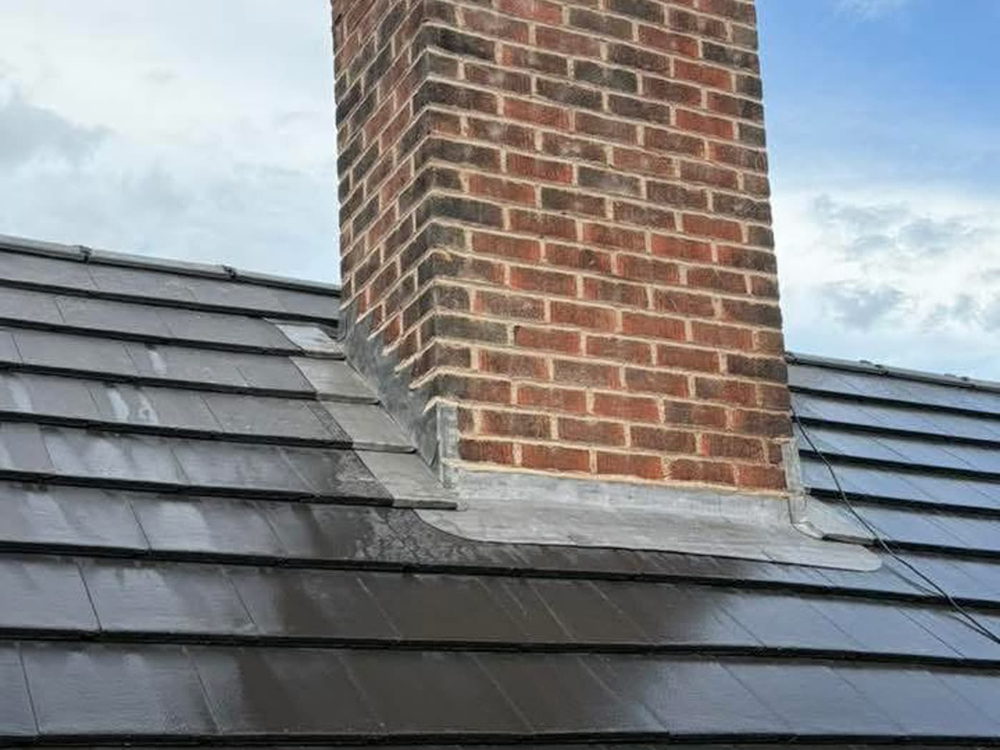

Areas we cover
Roofing and building work right across Glasgow, Ayrshire and Central Scotland.
In short
E Stewart Roofing Ltd works across Glasgow, Kilmarnock, Ayr, Troon, Irvine, Prestwick, Cumnock, East Kilbride, Paisley, Hamilton, Greenock, Gourock, Port Glasgow, Largs, Kilwinning, Ardrossan, Saltcoats, Newton Mearns, Bearsden, Milngavie and all surrounding areas, covering Glasgow, Ayrshire and the west of Scotland. If your town is not listed, call 0141 459 1536 and ask, because the list is the main areas rather than a hard boundary.
Roofers in Glasgow
Glasgow City. Covering Shawlands, Dennistoun, Partick and the surrounding area.
Read moreRoofers in Kilmarnock
East Ayrshire. Covering Crosshouse, Hurlford, Kilmaurs and the surrounding area.
Read moreRoofers in Ayr
South Ayrshire. Covering Alloway, Doonfoot, Prestwick and the surrounding area.
Read moreRoofers in Troon
South Ayrshire. Covering Barassie, Loans, Monkton and the surrounding area.
Read moreRoofers in Irvine
North Ayrshire. Covering Dreghorn, Kilwinning, Springside and the surrounding area.
Read moreRoofers in Prestwick
South Ayrshire. Covering Monkton, Ayr, Troon and the surrounding area.
Read moreRoofers in Cumnock
East Ayrshire. Covering Auchinleck, New Cumnock, Ochiltree and the surrounding area.
Read moreRoofers in East Kilbride
South Lanarkshire. Covering Calderwood, Westwood, Stewartfield and the surrounding area.
Read moreRoofers in Paisley
Renfrewshire. Covering Renfrew, Johnstone, Linwood and the surrounding area.
Read moreRoofers in Hamilton
South Lanarkshire. Covering Blantyre, Bothwell, Uddingston and the surrounding area.
Read moreRoofers in Greenock
Inverclyde. Covering Gourock, Port Glasgow, Inverkip and the surrounding area.
Read moreRoofers in Gourock
Inverclyde. Covering Greenock, Inverkip, Wemyss Bay and the surrounding area.
Read moreRoofers in Port Glasgow
Inverclyde. Covering Greenock, Kilmacolm, Langbank and the surrounding area.
Read moreRoofers in Largs
North Ayrshire. Covering Fairlie, Skelmorlie, West Kilbride and the surrounding area.
Read moreRoofers in Kilwinning
North Ayrshire. Covering Irvine, Stevenston, Dalry and the surrounding area.
Read moreRoofers in Ardrossan
North Ayrshire. Covering Saltcoats, Stevenston, West Kilbride and the surrounding area.
Read moreRoofers in Saltcoats
North Ayrshire. Covering Ardrossan, Stevenston, Kilwinning and the surrounding area.
Read moreRoofers in Newton Mearns
East Renfrewshire. Covering Giffnock, Clarkston, Busby and the surrounding area.
Read moreRoofers in Bearsden
East Dunbartonshire. Covering Milngavie, Anniesland, Drumchapel and the surrounding area.
Read moreRoofers in Milngavie
East Dunbartonshire. Covering Bearsden, Torrance, Baldernock and the surrounding area.
Read moreNot sure if you are in range?
Call 0141 459 1536 with your postcode and you will get a straight answer.
Frequently asked questions
Which areas do you cover?
Glasgow, Kilmarnock, Ayr, Troon, Irvine, Prestwick, Cumnock, East Kilbride and Paisley, plus the surrounding towns and villages across Ayrshire, South Lanarkshire, Renfrewshire and Central Scotland.
Do you charge to travel to my area?
Travel within the areas listed on this page is not charged separately. If you are outside them it is still worth calling, because it depends on the job and where else we are working that week.
I am not on your list, can you still help?
Very possibly. The towns listed are the main ones, not a boundary. Call 0141 459 1536 with your postcode and you will get a straight yes or no.